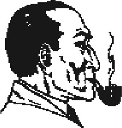
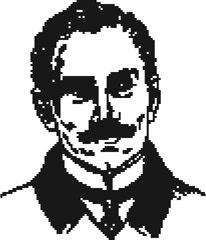
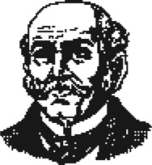
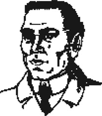
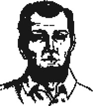
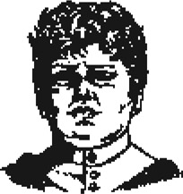
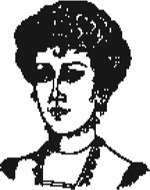
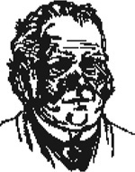
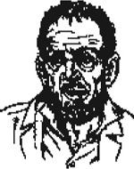

Các nhân vật trong truyện
Listen to Part 1:

Sherlock Holmes là một thám tử rất thông minh. Ông sống và làm việc tại 221B phố Baker, London.

Tiến sĩ Watson là bạn của Sherlock Holmes. Anh giúp Sherlock Holmes giải quyết các bí ẩn.
Tiến sĩ Mortimer sống gần Dartmoor ở vùng Tây Nam nước Anh. Ông là bác sĩ y khoa.
Ngài Hugo Baskerville là chủ sở hữu của Baskerville Hall năm 1645.

Ngài Charles Baskerville là chủ sở hữu của Baskerville Hall vào đầu câu chuyện này. Tiến sĩ Mortimer cho rằng ngài Charles đã bị giết.
Listen to Part 2:

Ngài Henry Baskerville là chủ mới của Baskerville Hall. Ngài đến từ Canada để sinh sống tại Anh.

Ông và bà Barrymore là người hầu ở Baskerville Hall.


Ông Jack Stapleton sống ở Merripit House gần Grimpen Mire. Stapleton thích nghiên cứu thực vật, chim chóc và côn trùng trên vùng Dartmoor.

Cô Stapleton là em gái của Jack Stapleton. Cô sống ở Merripit House. Cô là một phụ nữ cao lớn, xinh đẹp với mái tóc và đôi mắt đen.

Listen to Part 3:
Ông Frankland sống ở Lafter Hall gần Coombe Tracey. Ông thích nghiên cứu các vì sao và có một chiếc kính thiên văn lớn.

Selden là một tù nhân đã trốn thoát khỏi Nhà tù Dartmoor.
Table of contents
- Title Page
- Contents
- A Note about This Story
- The People in This Story
- 1 Mr Sherlock Holmes
- 2 The Curse of the Baskervilles
- 3 The Problem
- 4 Sir Henry Baskerville
- 5 The Stolen Boot
- 6 Baskerville Hall
- 7 The Stapletons of Merripit House
- 8 Dr Watson’s First Report
- 9 The Light On The Moor
- 10 The Man On The Moor
- 11 High Tor Farm
- 12 Setting the Trap
- 13 The Hound of the Baskervilles
- 14 Back in Baker Street
- Points for Understanding
- List of titles at Elementary Level
- Copyright Page